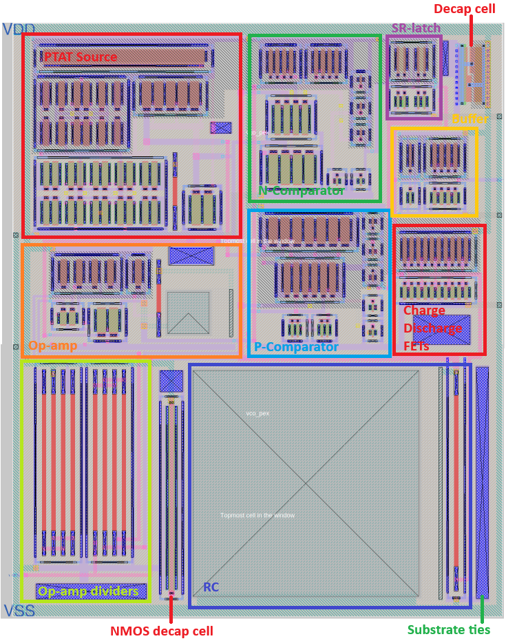
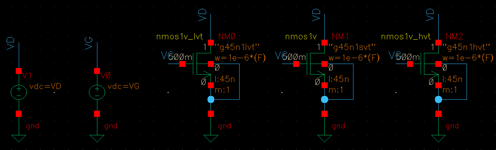
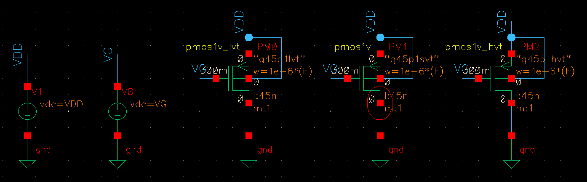
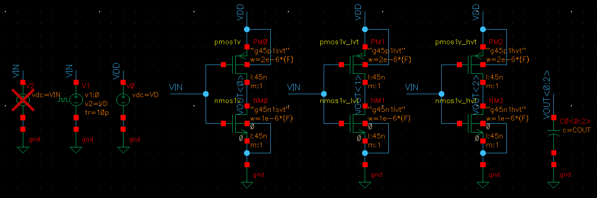
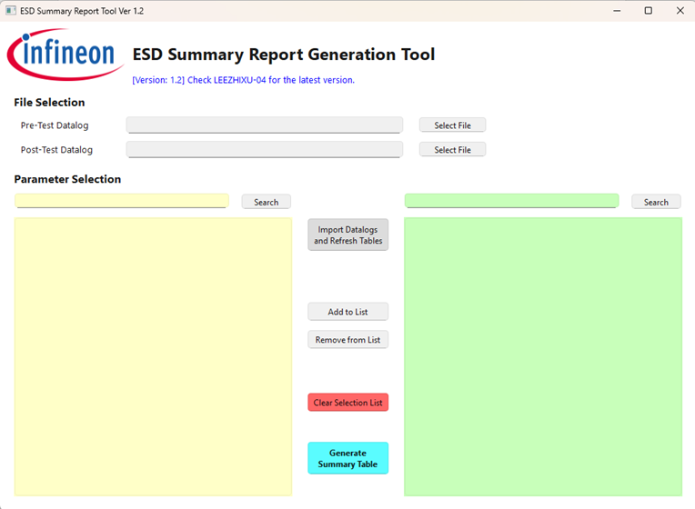
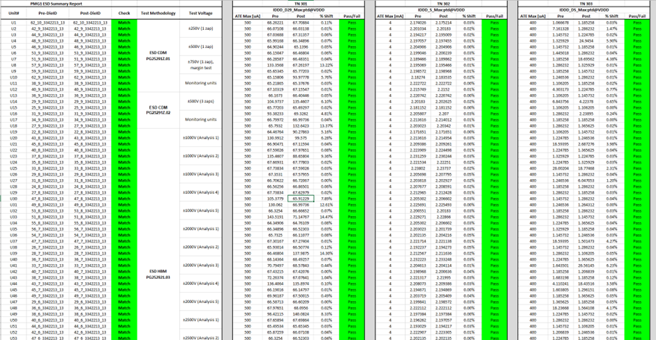

A showcase of my university projects and practical work

Final Year Project
To implement and validate a low-power fully-integrated timing circuit in Sky130, demonstrating complete front-to-back IC design flow (schematic, simulation, layout, verification) while analyzing trade-offs in power, area, and performance.



Fundamentals of Integrated Circuit Design Module (FICD)
Extensively explore and document the performance characteristics of 45 nm CMOS devices by varying input and physical characteristics, and analyze the financial feasibility and yield issues.


Internship Project
Creating summary reports from datalogs was repetitive manual work and consumed excessive time.
Developed a custom Python program to generate Excel summary reports automatically from datalogs, integrating it into the team's workflow.